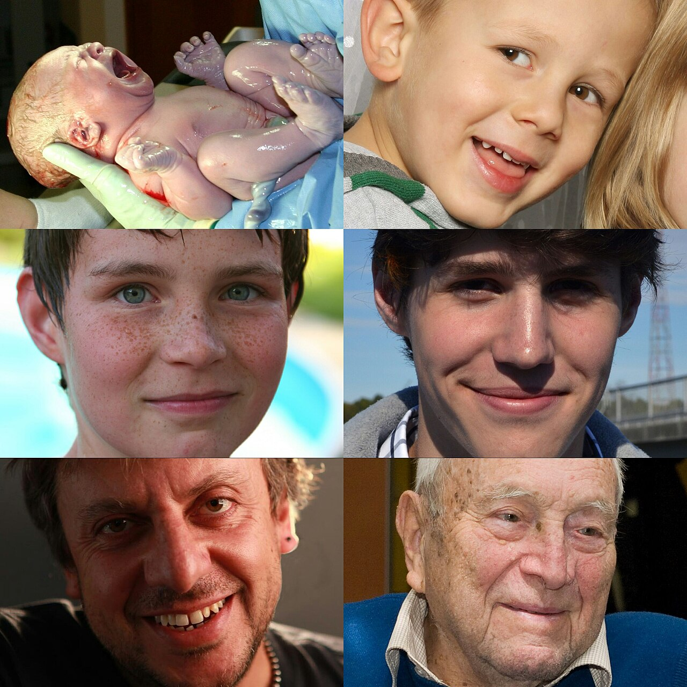

Lifespan Development
You are not the person you were at three, and you will not be the person you are now at eighty — yet something recognizable runs through all of it. Developmental psychology is the study of how humans grow and change from conception to death: how a single fertilized cell becomes a thinking, feeling, socially embedded person, and how that person keeps changing across every decade that follows. This chapter follows the arc. It asks how development is even studied, watches the body and brain take shape before birth, traces how children come to think and to love, and follows the story through adolescence, adulthood, and the end of life. Along the way you will meet the researchers — Piaget, Ainsworth, Erikson, Kübler-Ross — whose work still frames how we understand a human life.
By the end of this chapter you can
- Explain the nature–nurture debate and why modern psychology treats it as an interaction rather than a contest.
- Distinguish continuous from stage theories of development, and cross-sectional from longitudinal research designs.
- Describe the three prenatal stages and explain how teratogens harm the developing organism.
- Summarize newborn reflexes and abilities and the orderly pattern of motor development.
- Lay out Piaget's four stages of cognitive development and note where later research revised him.
- Compare attachment styles from Ainsworth's Strange Situation and place them beside Erikson's psychosocial stages.
- Explain the changes of puberty, the search for identity, and the physical and cognitive course of adulthood and aging.
- Describe Kübler-Ross's account of dying and why it is not a fixed sequence everyone marches through.
Section 1How we study development

Three questions that organize the field
Developmental psychologists return again and again to three deep questions, and it helps to hold them in mind as a map. The first is nature and nurture: how much of who we become is written in our genes, and how much is shaped by experience, parenting, culture, and chance? The second is continuity versus stages: does development unfold as a gradual, continuous accumulation of small changes, like a ramp, or does it move through distinct stages, like a staircase, in which the child is qualitatively different at each level? The third is stability versus change: do our early traits — a shy temperament, a sunny disposition — persist across the whole lifespan, or can a person be genuinely remade by later experience?
None of these has a tidy one-word answer, and the honest reply to the first is almost always "both." The old habit of asking whether a trait is due to nature or nurture has given way to asking how the two interact. Genes are not a blueprint that stamps out a fixed result; they are more like a set of tendencies that experience switches on, tunes up, or quiets down. The emerging field of epigenetics studies exactly this — how the environment can turn genes on and off without changing the DNA sequence itself — giving a molecular face to the truism that heredity and experience are woven together.
Nature via nurture
The cleanest evidence that both matter comes from studies designed to pull them apart. Twin studies compare identical twins, who share essentially all their genes, with fraternal twins, who share about half — if identical twins are more alike on some trait, genes are implicated. Adoption studies ask whether children resemble their biological parents (genes) or the adoptive parents who raised them (environment). The recurring finding across decades of this work is that almost every psychological trait is shaped by both: identical twins raised apart are strikingly similar in intelligence and temperament, yet no trait is fully determined by genes alone. Development is genes and environment in constant conversation.
Cross-sectional and longitudinal designs
Because development happens over time, developmentalists need designs that capture change. There are two main strategies, and each buys an advantage at a cost. A cross-sectional study compares people of different ages at the same moment — a group of 20-year-olds, a group of 50-year-olds, a group of 80-year-olds, all tested this year. It is fast and cheap, but it has a hidden trap: the age groups differ not only in age but in the era they grew up in, a cohort effect. If today's 80-year-olds score lower on a computer task than today's 20-year-olds, it may reflect a lifetime with less technology, not aging itself.
A longitudinal study instead follows the same people across many years, testing them repeatedly as they age. This cleanly separates aging from cohort, but it is slow, expensive, and vulnerable to attrition — participants move, lose interest, or die, and the ones who stay may be unusually healthy or motivated, biasing the result. Much of what we confidently know about development rests on comparing what these two designs reveal.
| Design | How it works | Strength | Weakness |
|---|---|---|---|
| Cross-sectional | Compare different age groups at one point in time | Fast, inexpensive, no waiting | Cohort effects confound age with generation |
| Longitudinal | Follow the same people over many years | Separates true aging from cohort | Slow, costly; attrition biases the sample |
- Development turns on nature–nurture, continuity vs stages, and stability vs change — and the modern answer to nature–nurture is interaction.
- Twin and adoption studies show that almost every trait reflects both heredity and environment.
- Cross-sectional designs are fast but confounded by cohort effects; longitudinal designs isolate aging but suffer attrition.
Section 2Prenatal development and infancy
Nine months in three stages
Life before birth unfolds through three named periods. The germinal stage covers roughly the first two weeks after conception: the fertilized egg, or zygote, divides rapidly as it travels down the fallopian tube and implants in the wall of the uterus. The embryonic stage runs from about week three to week eight, and it is the great construction phase — the heart begins to beat, and the arms, legs, brain, and internal organs all begin to form from the fast-dividing embryo. From about week nine until birth is the fetal stage, during which the now-recognizable fetus grows dramatically in size, its organs mature, and it becomes able to move, hear, and eventually survive outside the womb.
Teratogens and critical periods
The developing organism is protected but not sealed off. A teratogen is any agent — a drug, a virus, alcohol, radiation — that can cross the placenta and harm development. The damage a teratogen does depends heavily on timing: each organ has a critical period during which it is forming and is therefore most vulnerable, which is why the embryonic stage, when everything is under construction, is the period of greatest risk. Alcohol is the textbook example. Heavy prenatal exposure can produce fetal alcohol spectrum disorder (FASD) — a pattern of facial abnormalities, stunted growth, and lifelong cognitive and behavioral deficits — and because no safe threshold has been established, the standard guidance is to avoid alcohol entirely in pregnancy.
| Prenatal stage | Timing | What happens |
|---|---|---|
| Germinal | Conception to ~2 weeks | Zygote divides and implants in the uterine wall |
| Embryonic | ~Weeks 3–8 | Heart beats; organs and limbs form; peak vulnerability to teratogens |
| Fetal | ~Week 9 to birth | Rapid growth; organs mature; movement, hearing, viability |
What newborns can do, and how they get moving
Newborns arrive far from helpless. They are equipped with a set of automatic reflexes that promote survival: the rooting reflex turns the head and opens the mouth toward a touch on the cheek, the sucking reflex follows, the grasping reflex curls the fingers tightly around anything that touches the palm, and the Moro (startle) reflex flings the arms out and back in response to a sudden loss of support. Newborns also come with striking perceptual preferences — they turn toward their mother's voice and the smell of her milk, and they gaze longer at face-like patterns than at scrambled ones. Researchers read these preferences through habituation: a baby looks less and less at a repeated image, and looks again when something new appears, revealing what the infant can tell apart and remember.
Motor skills then emerge in a remarkably orderly sequence driven largely by maturation — the biologically programmed unfolding of the nervous system and muscles. Two rules describe the pattern. Development proceeds cephalocaudally, head to toe: babies control their head before their trunk, and their trunk before their legs. And it proceeds proximodistally, center outward: control of the shoulders and hips precedes the fine control of fingers and toes. The familiar milestones — lifting the head, rolling over, sitting, crawling, standing, walking around the first birthday — arrive in nearly the same order across cultures, though the exact ages vary. Maturation sets the sequence; experience adjusts the timing.
- Prenatal development runs germinal → embryonic → fetal; the embryonic stage builds the organs and is most vulnerable.
- Teratogens cross the placenta; timing matters because each organ has a critical period — alcohol can cause FASD.
- Newborns have survival reflexes (rooting, sucking, grasping, Moro) and face/voice preferences read through habituation.
- Motor development is orderly and maturation-driven: cephalocaudal (head to toe) and proximodistal (center outward).
Section 3How thinking develops
Piaget's building blocks
No one shaped our picture of the child's mind more than the Swiss psychologist Jean Piaget. His central insight was that children are not miniature adults who simply know less — they think in qualitatively different ways at different ages, and they build their understanding actively, like little scientists testing the world. The units of that understanding are schemas, mental frameworks that organize knowledge. Children extend their schemas through two complementary processes: assimilation, fitting new experiences into existing schemas (a toddler who knows "dog" calls the first cow she sees a "doggy"), and accommodation, adjusting the schemas when they no longer fit (learning that the four-legged animal is a different thing, a "cow"). Cognitive growth is the endless back-and-forth of these two.
The four stages
Piaget proposed that every child passes through the same four stages in the same order. In the sensorimotor stage (birth to about age 2), infants know the world through their senses and actions — looking, mouthing, grasping. The signal achievement of this stage is object permanence, the understanding that objects continue to exist when they cannot be seen; before it develops, an object hidden under a blanket is, for the baby, simply gone. In the preoperational stage (about 2 to 7), children can use language and symbols but reason is still intuitive and limited. They show egocentrism — difficulty taking another person's point of view — and they lack conservation, the understanding that quantity stays the same despite a change in shape. Pour a short wide glass of juice into a tall thin one and the preoperational child insists there is now "more," fooled by the height.
In the concrete operational stage (about 7 to 11), children master conservation and can reason logically about concrete, tangible events, though abstract or hypothetical reasoning still eludes them. Finally, in the formal operational stage (about 12 through adulthood), the adolescent becomes able to think abstractly and hypothetically — to reason about justice, to test possibilities systematically, to ponder what could be rather than only what is.
| Stage | Age (approx.) | Hallmark achievement | Typical limitation |
|---|---|---|---|
| Sensorimotor | Birth–2 | Object permanence | Knows world only through senses & action |
| Preoperational | 2–7 | Language, symbols, pretend play | Egocentrism; lacks conservation |
| Concrete operational | 7–11 | Conservation; logical reasoning about real things | Struggles with abstract/hypothetical ideas |
| Formal operational | 12–adult | Abstract & hypothetical reasoning | Not everyone uses it consistently |
Beyond Piaget
Piaget's stages remain a foundation, but half a century of research has revised the details. Cleverer methods — measuring how long babies stare at impossible events rather than whether they reach for hidden toys — show that infants grasp object permanence and simple physics earlier than Piaget thought; he tended to underestimate young children. Development also looks more continuous and less like a set of hard stage boundaries than he supposed. His great contemporary rival, the Russian psychologist Lev Vygotsky, argued that cognition is fundamentally social: children learn within the zone of proximal development — the gap between what they can do alone and what they can do with help — through scaffolding from more skilled partners. A separate line of work on theory of mind traces how children come to understand that other people have beliefs and desires different from their own, typically clicking into place around age four or five.
- Piaget: children build knowledge actively via schemas, assimilation, and accommodation.
- The four stages are sensorimotor (object permanence), preoperational (egocentrism, no conservation), concrete operational (conservation, concrete logic), and formal operational (abstract reasoning).
- Later research shows Piaget underestimated young children; Vygotsky stressed the social zone of proximal development and scaffolding.
Section 4How we form bonds

Attachment: the first bond
The intense emotional tie between an infant and a caregiver is called attachment, and understanding where it comes from overturned an old assumption. Behaviorists once assumed babies love whoever feeds them — that attachment is really about food. Harry Harlow's famous experiments with infant monkeys demolished that idea. Given a choice between a bare wire "mother" that dispensed milk and a soft cloth "mother" that gave no food, the baby monkeys clung to the cloth mother, running to it for comfort when frightened. What mattered was contact comfort, not calories. The British psychiatrist John Bowlby built this into a broader theory: attachment is an evolved system that keeps the vulnerable infant close to a protector, a secure base from which to explore.
Ainsworth and the Strange Situation
Bowlby's collaborator Mary Ainsworth devised a way to measure attachment: the Strange Situation, a laboratory procedure in which a one-year-old is observed through a series of separations from and reunions with the caregiver, with a stranger present. How the baby behaves — especially at reunion — reveals the quality of the bond. Ainsworth described a secure attachment (the baby explores freely using the caregiver as a base, is distressed at separation, and is readily comforted at reunion) and two insecure patterns: avoidant (the baby seems indifferent, avoiding the caregiver at reunion) and anxious/resistant (the baby is intensely distressed and hard to soothe, both clinging and resisting). A fourth pattern, disorganized, was later added. Attachment security is shaped partly by caregiver responsiveness and partly by the infant's own temperament — the biologically based emotional style that psychologists like Chess and Thomas classified as easy, difficult, or slow-to-warm-up.
| Attachment style | Behavior at reunion | Uses caregiver as secure base? |
|---|---|---|
| Secure | Distressed at separation, comforted and settled at reunion | Yes |
| Avoidant | Little distress; avoids or ignores caregiver | No |
| Anxious / resistant | Very distressed; clings yet resists comfort | Ambivalently |
| Disorganized | Confused, contradictory behavior; no clear strategy | No coherent strategy |
Erikson's eight ages of life
Where attachment describes the first bond, Erik Erikson mapped social development across the whole lifespan. He proposed eight psychosocial stages, each defined by a central crisis — a tension between two possibilities — that the person must resolve. In infancy the crisis is trust vs mistrust, set largely by whether caregivers are dependable. Toddlerhood brings autonomy vs shame and doubt; the preschool years, initiative vs guilt; the school years, industry vs inferiority. Adolescence poses the pivotal identity vs role confusion. Young adulthood turns on intimacy vs isolation, middle adulthood on generativity vs stagnation (contributing to the next generation), and late adulthood on integrity vs despair, the task of looking back on one's life with acceptance rather than regret. Erikson's great contribution was insisting that development does not stop at adolescence — it continues to the last chapter.
- Harlow showed attachment rests on contact comfort, not food; Bowlby framed it as an evolved secure-base system.
- Ainsworth's Strange Situation reveals secure, avoidant, anxious/resistant, and disorganized attachment, shaped by responsiveness and infant temperament.
- Erikson's eight psychosocial stages span the whole lifespan, each a crisis — from trust vs mistrust to integrity vs despair.
Section 5Adolescence through late adulthood

Adolescence: body and identity
Adolescence opens with puberty, the surge of hormones that turns a child's body into an adult's capable of reproduction. It brings growth in the primary sex characteristics (the reproductive organs) and the appearance of secondary sex characteristics (breasts, facial hair, deeper voices, body hair), along with landmark events — menarche, the first menstrual period, and spermarche, the first ejaculation. The adolescent brain is also under renovation: the emotion-driven limbic system matures earlier than the prefrontal cortex that governs judgment and impulse control, a mismatch that helps explain adolescent risk-taking.
Psychologically, the defining task of adolescence — in Erikson's terms, identity vs role confusion — is figuring out who one is. James Marcia sharpened this into four identity statuses defined by whether a young person has explored options and made commitments: diffusion (no exploration, no commitment), foreclosure (commitment without exploration, often just adopting a parent's plan), moratorium (actively exploring but not yet committed), and achievement (commitment reached after genuine exploration). Identity is not a switch that flips once; people revisit it throughout life.
Adulthood
Adulthood is the longest stretch of the lifespan and the least neatly staged. Many psychologists now describe an emerging adulthood in the late teens and twenties — a period, common in industrialized societies, of extended exploration before full adult commitments. Physically, most capacities peak in the twenties and then decline gradually; menopause, the end of menstruation, arrives around age 50. Cognitively, a useful distinction is between fluid intelligence — raw processing speed and reasoning about novel problems, which tends to decline with age — and crystallized intelligence, the accumulated store of knowledge and vocabulary, which tends to hold steady or even grow. Erikson placed the central adult tasks here: intimacy (forming committed relationships) in early adulthood and generativity (mentoring, parenting, contributing) in midlife.
Aging and the end of life
The picture of late adulthood is far more hopeful than the stereotypes suggest. Yes, processing slows and some memory systems weaken, but many older adults show preserved or superior wisdom, expertise, and emotional regulation. The socioemotional selectivity theory proposes that as people sense time growing short, they prioritize emotionally meaningful relationships and experiences, which helps explain why older adults often report greater well-being than the young. Facing death itself, the psychiatrist Elisabeth Kübler-Ross famously described five reactions among the dying: denial, anger, bargaining, depression, and acceptance. Her work broke a taboo and gave language to grief, but it is widely misread. People do not march through the five in a fixed order; they may skip stages, repeat them, or experience others entirely. The stages are a description of common feelings, not a schedule everyone must keep.
| Kübler-Ross reaction | What it looks like |
|---|---|
| Denial | "This can't be happening" — refusing to accept the reality |
| Anger | "Why me?" — resentment and frustration |
| Bargaining | "If I just…" — trying to negotiate a way out |
| Depression | Sadness and withdrawal as the loss sinks in |
| Acceptance | Coming to terms with the reality with relative calm |
- Puberty brings primary and secondary sex characteristics, menarche/spermarche, and a brain still building impulse control.
- Adolescence centers on identity (Erikson; Marcia's four statuses); adulthood on intimacy then generativity.
- Fluid intelligence declines with age while crystallized intelligence holds; older adults often report high well-being.
- Kübler-Ross's five reactions to dying describe common feelings, not a fixed sequence.
The chapter in one breath
- Development is the joint product of nature and nurture; the field asks whether change is continuous or staged, and whether early traits are stable.
- Cross-sectional designs are fast but confounded by cohort effects; longitudinal designs isolate aging but face attrition.
- Prenatal life runs germinal → embryonic → fetal; teratogens do the most harm during an organ's critical period.
- Newborns arrive with survival reflexes and preferences; motor skills unfold cephalocaudally and proximodistally by maturation.
- Piaget's four stages trace thinking from object permanence to abstract reasoning; Vygotsky added the social dimension.
- Attachment (Harlow, Bowlby, Ainsworth) rests on contact comfort and a secure base; Erikson's eight psychosocial stages span the whole life.
- Adolescence brings puberty and the search for identity; adulthood and aging preserve crystallized intelligence and often well-being; Kübler-Ross described dying without prescribing a fixed order.
ReferenceWords worth knowing
A quick reference for the terms in this chapter — skim it now, or circle back whenever a word trips you up.
- Accommodation
- Adjusting existing schemas to fit new information that will not fit as-is (Piaget).
- Assimilation
- Interpreting new experiences in terms of existing schemas (Piaget).
- Attachment
- The strong, enduring emotional bond between an infant and a caregiver.
- Cephalocaudal
- The head-to-toe pattern of motor development: head control precedes trunk, which precedes legs.
- Conservation
- The understanding that quantity stays the same despite changes in shape or arrangement.
- Critical (sensitive) period
- A window during which a system is forming and is especially vulnerable to influence or harm.
- Cross-sectional study
- A design comparing people of different ages at a single point in time.
- Egocentrism
- The preoperational child's difficulty taking another person's point of view.
- Fetal alcohol spectrum disorder (FASD)
- Physical and cognitive impairments caused by prenatal alcohol exposure.
- Formal operational stage
- Piaget's final stage (about age 12+), marked by abstract and hypothetical reasoning.
- Identity
- One's coherent sense of self; forming it is the central task of adolescence (Erikson).
- Longitudinal study
- A design that follows the same people repeatedly over an extended time.
- Maturation
- Biologically programmed growth processes that unfold relatively independently of experience.
- Menarche
- A girl's first menstrual period, a landmark of puberty.
- Object permanence
- The understanding that objects continue to exist when out of sight; emerges in the sensorimotor stage.
- Psychosocial stage
- One of Erikson's eight lifespan stages, each defined by a central social crisis.
- Schema
- A mental framework that organizes and interprets information (Piaget).
- Secure attachment
- A bond in which the infant uses the caregiver as a secure base and is comforted at reunion.
- Sensorimotor stage
- Piaget's first stage (birth–2), in which infants know the world through senses and action.
- Strange Situation
- Ainsworth's laboratory procedure for classifying an infant's attachment style.
- Teratogen
- Any agent (drug, virus, alcohol, radiation) that can cross the placenta and harm prenatal development.
- Zone of proximal development
- Vygotsky's term for the gap between what a child can do alone and with skilled help.